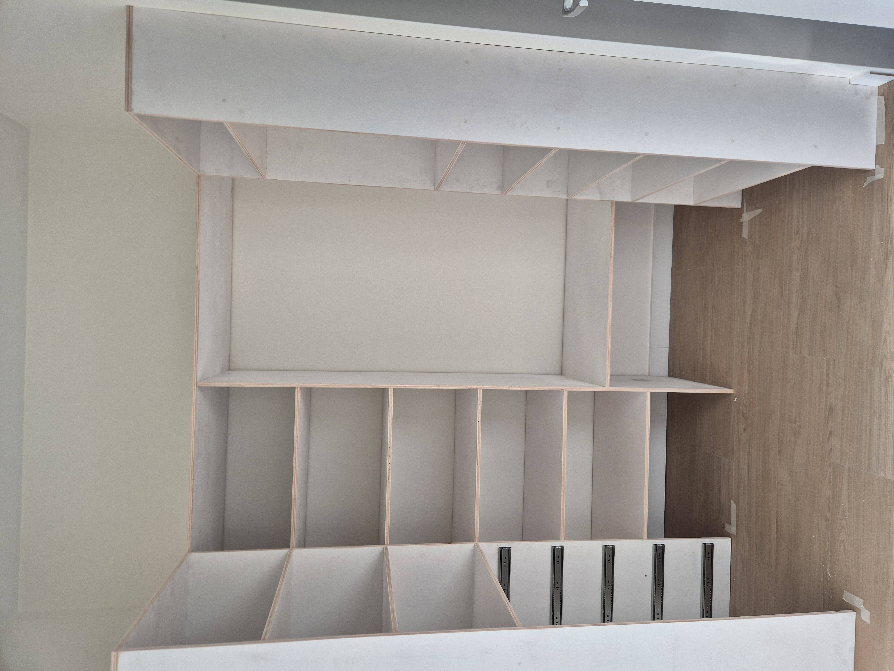
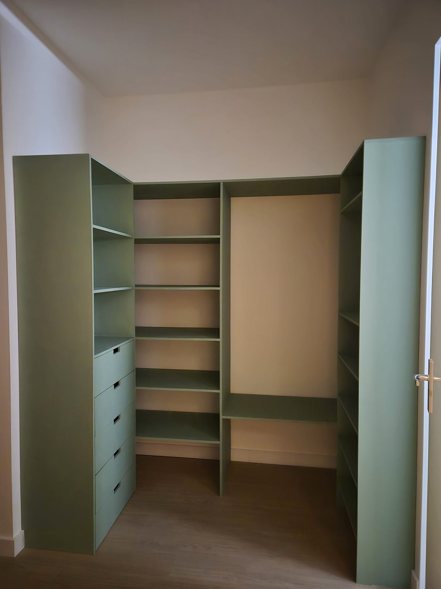

Project 01
Custom Cabinet
- Focus
- Storage, fit, fabrication
- Output
- Built custom cabinet
A custom cabinet made for an awkward space in a small apartment, designed as one place for personal belongings. The U-shaped layout works like a walk-in closet without needing a separate room, so every item can be reached from one standing position.



